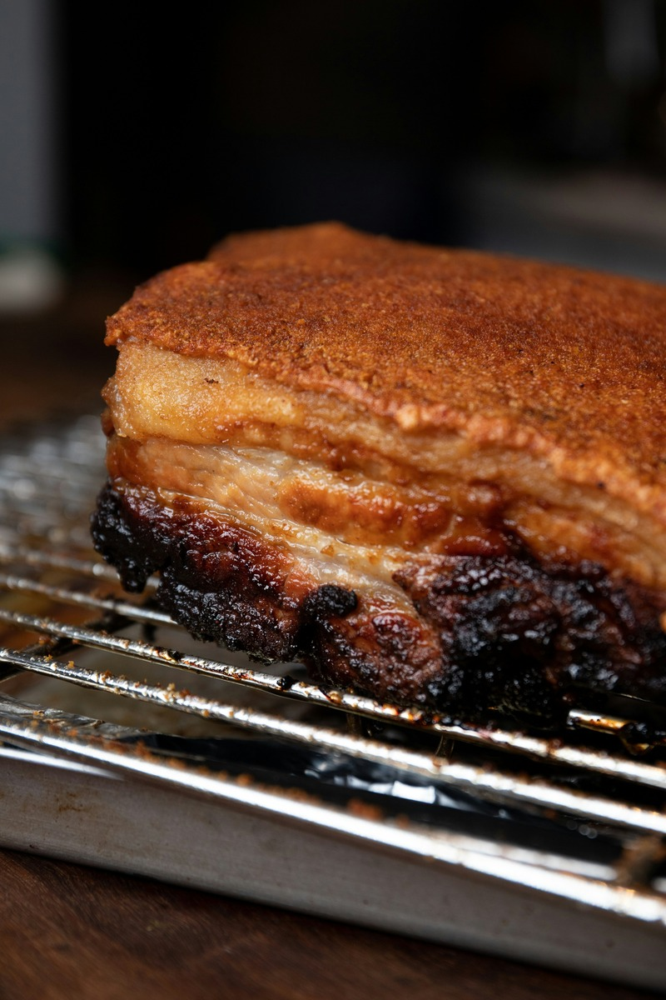
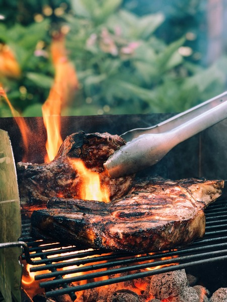
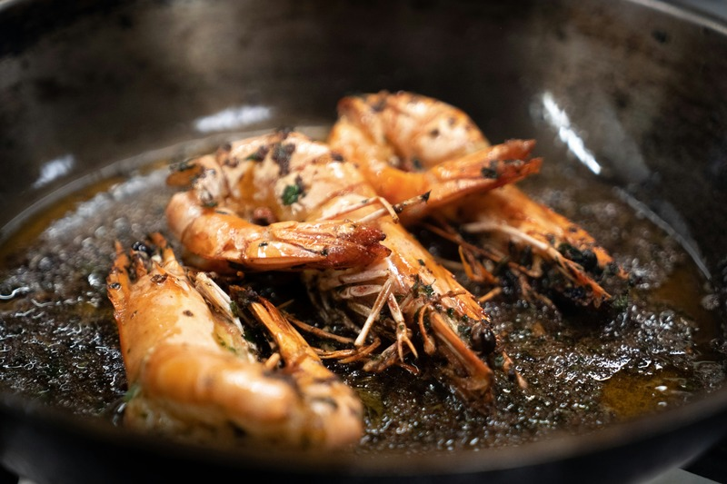
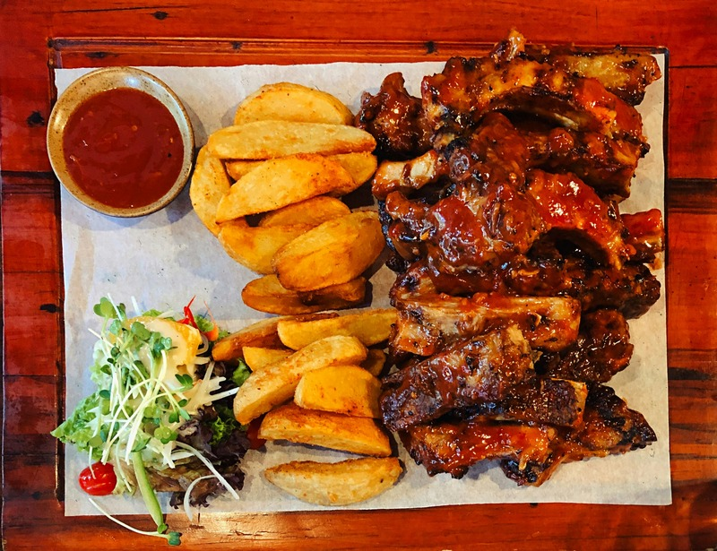

Notre Carte Gourmande
Cliquez sur une carte pour découvrir les détails du plat

SpécialitéGriot de Porc
Morceaux de porc marinés et frits à la perfection.
Ingrédients : Epaule de porc, jus d'orange amère, piment bouc, ail, poivrons.
Accompagnement : Bananes pesées et pikliz maison légerement épicé.
Temps de préparation : 15 min
Côte de Bœuf Grillée
Saisie au feu de bois avec herbes aromatiques.
Ingrédients : Bœuf pur jus, beurre d'ail persillé, romarin, gros sel de mer.
Accompagnement : Frites croustillantes et poêlée de champignons.
Temps de préparation : 25 min
Chef ChoiceCrevettes Géantes
Saisies au beurre d'ail et jus de citron vert.
Ingrédients : Crevettes sauvages, ail pressé, persil frais, beurre fin.
Accompagnement : Riz blanc parfumé et bananes mûres frites.
Temps de préparation : 20 min
Poulet Rôti Épicé
Demi-poulet mariné aux épices créoles.
Ingrédients : Poulet élevé en plein air, thym, oignons, sauce échalote.
Accompagnement : Riz collé aux pois noirs et salade verte.
Temps de préparation : 18 min.jpg) Spécialité
Spécialité
Poulet Jerk Jamaïcain
Morceaux de poulet marinés dans un mélange d'épices fumées et grillés traditionnellement au feu de bois.
Ingrédients : Ingrédients : Poulet, piment Scotch bonnet, piment de la Jamaïque (toute-épice), thym, ail, gingembre.
Accompagnement : Rice and peas (riz aux haricots rouges) et bananes plantains frites.
Temps de préparation : 20 min Spécialité
Spécialité
Pizza Margherita
Pizza traditionnelle cuite au four avec une sauce tomate acidulée, de la mozzarella fondante et du basilic frais.
Ingrédients : : Pâte de pizza, sauce tomate maison, mozzarella fraîche, huile d'olive, basilic.
Accompagnement : Huile pimentée et petites salades vertes.
Temps de préparation : 15 min Spécialité
Spécialité
Poisson Grillé au Citron Vert
Poisson frais grillé à la perfection avec des marques de cuisson bien visibles et des saveurs d'agrumes.
Ingrédients : Poisson entier (vivaneau ou daurade), citron vert, ail, thym frais, huile d'olive.
Accompagnement : Riz blanc, tranches d'avocat et bananes plantains frites.
Temps de préparation : 20 min.jpg) Spécialité
Spécialité
Brochettes de Crevettes Tropicales
Crevettes juteuses grillées sur des piques en bois, alternées avec des morceaux de légumes et de fruits.
Ingrédients : Grosses crevettes, morceaux d'ananas, poivrons, oignons rouges, miel, citron.
Accompagnement : Riz parfumé à la noix de coco et petite salade fraîche.
Temps de préparation : 15 min.jpg) Spécialité
Spécialité
Poulet Rôti à la Caribéenne
Demi-poulet rôti au four, présentant une peau caramélisée, brillante et riche en saveurs.
Ingrédients : Poulet, cassonade, sauce soja, ail écrasé, gingembre frais, thym.
Accompagnement : Frites de patates douces et salade de chou crémeuse (coleslaw).
Temps de préparation : 25 min
SpécialitéTravers de Porc BBQ
Côtes de porc fondantes et enrobées d'une généreuse sauce barbecue exotique et collante.
Ingrédients :Travers de porc (ribs), sauce BBQ à la goyave ou au rhum, ail, oignons, épices.
Accompagnement :Pommes de terre sautées et maïs grillé en épi.
Temps de préparation : 20 min.jpg) Spécialité
Spécialité
Poulet Frit Croustillant
Morceaux de poulet à la panure dorée et très croustillante, marinés aux épices antillaises.
Ingrédients : : Poulet (pilons ou cuisses), farine, paprika, ail en poudre, poivre noir, piment doux.
Accompagnement : Macaroni au fromage (macaroni pie) et salade verte.
Temps de préparation : 15 min.jpg) Spécialité
Spécialité
Poulet Boucané
Morceaux de poulet traditionnellement fumés et grillés, offrant une belle couleur dorée et foncée.
Ingrédients : Poulet, jus de citron, ail, cive, piment végétarien, huile, marinade fumée.
Accompagnement : Riz aux haricots rouges et sauce chien (vinaigrette créole).
Temps de préparation : 25 min.jpg) Spécialité
Spécialité
Empanadas au Bœuf (Pâtés)
Chaussons de pâte dorés et farcis d'une viande hachée savoureusement assaisonnée.
Ingrédients : Pâte brisée ou feuilletée, bœuf haché, oignons, poivrons, pâte de tomate, épices.
Accompagnement : Sauce piquante légère et petite salade de concombres.
Temps de préparation : 15 min.jpg) Spécialité
Spécialité
Curry de Poulet
Ragoût de poulet onctueux et très coloré en jaune, mijoté dans une sauce riche aux épices.
Ingrédients : Morceaux de poulet, poudre de curry, pommes de terre, lait de coco, oignons, coriandre.
Accompagnement :Riz blanc ou pain plat (roti) et chutney de mangue.
Temps de préparation : 20 min.jpg) Spécialité
Spécialité
Salade Tropicale aux Crevettes
Assiette colorée, fraîche et visuellement très attrayante, parfaite pour un repas léger.
Ingrédients : Crevettes poêlées, mangue fraîche en dés, avocat, tomates cerises, salade mixte, vinaigrette au citron.
Accompagnement : Tranches de pain grillé ou quelques bananes pesées.
Temps de préparation : 10 min.jpg) Spécialité
Spécialité
Ceviche de Poisson
Dés de poisson blanc ultra-frais marinés dans un jus de citron éclatant avec des touches de couleurs vives.
Ingrédients : Filet de poisson blanc, jus de citron vert, oignons rouges, coriandre fraîche, piment doux, sel.
Accompagnement : Chips de bananes plantains croquantes ou tortillas de maïs.
Temps de préparation : 15 min